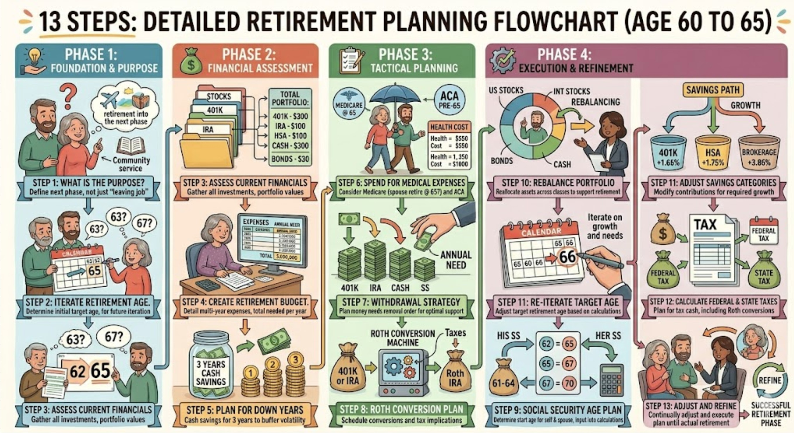

Retirement is the phase of life when an individual stops working full-time, typically due to age or health, transitioning to a lifestyle supported by savings, investments, or pensions rather than a salary. It often involves financial planning for the long term and, while historically starting around age 65, is now more flexible, with early options at 62 or later.
Financial Shift: Retirement involves relying on accumulated assets—such as 401(k) plans, pensions, or Social Security—rather than a steady paycheck.
Life Stage Transition: It is a major life change, often evolving through phases from a "honeymoon" period of freedom to a settled, new routine.
Work Flexibility: Retirement no longer strictly means stopping all work; many retirees pursue part-time work, consulting, or new, passion-driven careers.
Timing: While age 67 is currently considered the full retirement age for maximum Social Security benefits for those born in 1960 or later, individuals can choose to retire earlier or later based on their financial readiness.
Planning & Decision Making: Preparing financially and mentally before leaving the workforce.
Transition & Adjustment: The initial phase of leaving a career, which can bring feelings of freedom or, occasionally, anxiety about losing workplace structure.
Active Retirement: Settling into a new lifestyle, which may include leisure, travel, or part-time work.
